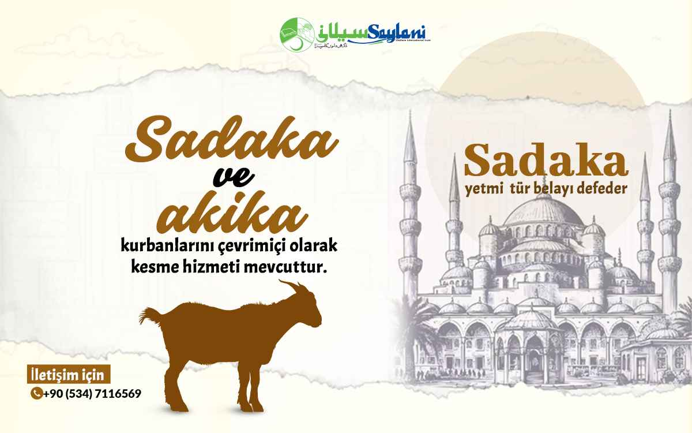

Welcome to the Saylani Welfare Non Governmental Organization in Pakistan
The largest NGO offering free education & healthcare.
Saylani Welfare is on the ground and already working with local communities to assess how best to support underprivileged families in more than 63 areas of day-to-day life.

General
Rs

What We Are Doing
Featured Appeals
Sponsor Vocational Students
Help deserving youth learn valuable technical skills and become self-reliant.
Daily Food Support
Ensure no one sleeps hungry. Fund daily meals for daily wagers and families.
Sponsor IT Students
Empower students with high-demand web development and AI skills.
Other Ongoing Projects

Hepatitis Clinic
Saylani Welfare has set up free clinics for complete screening and treatment of hepatitis patients across major cities.

Housing Society
Saylani Welfare is providing home facilities for homeless families. Thousands of houses and flats have been handed over.
IT Literacy Program
Developing tech leaders who bring foreign remittance into Pakistan, revolutionizing the national IT export industry.

Tharparkar Relief Mission
Constructed schools, reverse osmosis water purification plants, and medical aid posts in remote areas of Thar.
Our Daily & Monthly Impact

300,000+
Daily Meals
(Dastarkhwan Service)

20,000+
Family Adoption
(Monthly Support)

25,000+
Students
(Free Education)

125,000+
Medical Patients
(Monthly Treatment)
Media Updates
Saylani Rashan Distribution Drive Across Sindh
10,000+ IT Students Graduated in Karachi Ceremony
Free Blood Donation Camp Established in Lahore
Our Testimonials
"Saylani Welfare International Trust has been working tirelessly since 1999 to uplift the underprivileged. By providing free food, healthcare, and state-of-the-art IT training, we aim to eliminate poverty through empowerment."